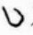

原本題鍚山莘公李澤長編集。澤長不知何時人。書中多引邱濬語。又元陸正傳。末稱正曾孫宗秀編入大明臣譜。知其爲明人也。其書諸家書目。皆不著錄。前無序例。大概鈔撮宋元通鑑綱目續編而爲之。從龍之名。不知義何所取。宋譜則題歷朝從龍譜。首載譜系圖。而名之曰南北宋趙氏譜系。稱名已誤。而以夏元昊竊據譜系。與宋並列。次太祖紀。次爲家譜。載宣祖及太后皇后太子皇弟。次前朝附譜。專載周恭帝及諸臣事。次藩國譜。載南漢劉鋠。蜀孟昶。北漢劉鈞。南唐李煜。吳越錢俶。及周行逢符彥卿二人。次文武人才譜。則載太祖時諸臣事。太宗以下至宋末。則皆先帝紀。次藩國。故曰藩寇。或曰鎭國叛寇譜。文武人才譜。或曰文武臣譜。或曰文武大臣譜。或曰諸臣士行譜。或曰文武官士民譜。皆隨筆起例。茫無定法。金元譜系圖。則列於徽宗之前。金遼兩朝事實散附於徽欽以後。及南渡各帝之末。元憲宗以上。亦散附焉。又有南宋黑白譜。則又專紀元太祖以至憲宗及諸臣事。以黑●白○黑白爲標識。元世祖則獨立一部。止名曰從龍黑白譜。亦不標元國號。而諸臣之譜。則又稱元朝從龍黑白譜。成宗以下九帝。則並不列譜。進退顚倒。體例淆雜。全無倫理。而驗其細字密行。朱墨甲乙。尚是當年手鈔之稿。亦可謂勞而罔功矣。